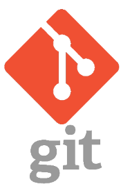
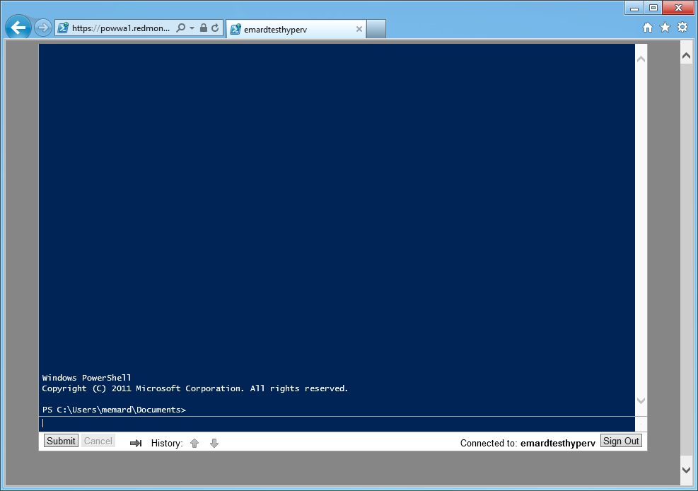
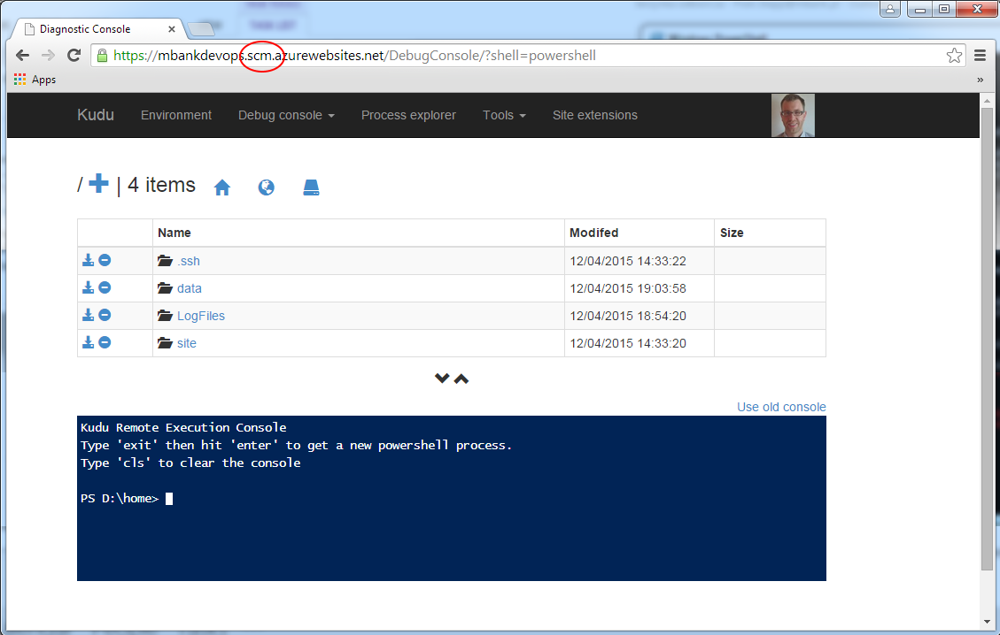

PowerIShell
for developers
Who am I?
PowerShell
why? why? why?
Demo 1
Let me introduce myself
Copy & paste :)
$voice = New-Object -ComObject SAPI.SPVoice
$voice.Rate = -1
$voice.Speak("Witajcie chłopcy i dziewczęta
Pozwólcie że się przedstawię.
Jestem PowerShell");Rebus

Demo 2
posh-git
How to install
(new-object Net.WebClient).DownloadString(
"http://psget.net/GetPsGet.ps1") | iex
Install-Module posh-git
Posh*
Thre are more posh* modules
Work with log files
Log files form production usually:
Demo 3 - unpack and grep log files
It is said but grep for log files in useful
set-alias 7zip "C:\Program Files\7-Zip\7z.exe"
pushd "$powerISHellRoot\logs"
rm *.log
get-childItem -Path .\gzip | foreach{7zip x $_.FullName}
gci -Filter "*.log" | select-string "Kaczka"
set-alias grep select-string
gci -Filter "*.log" | grep -context 5 "Kaczka"
Installation
Installation in bash is already on Windows. We can use PowerShell for this
For example to install Chocolatey we can run@powershell -NoProfile -ExecutionPolicy unrestricted
-Command "iex ((new-object net.webclient).DownloadString('
https://chocolatey.org/install.ps1'))"
&& SET PATH=%PATH%;%ALLUSERSPROFILE%\chocolatey\bin
SUDO
I really miss sudo command from Linux. In PowerShell we can have it:function sudo {
$file, [string]$arguments = $args;
$psi = new-object System.Diagnostics.ProcessStartInfo $file;
$psi.Arguments = $arguments;
$psi.Verb = "runas";
$psi.WorkingDirectory = get-location;
[System.Diagnostics.Process]::Start($psi);
}
SUDO example
pushd "$powerISHellRoot\Demo-VisualStudio"
sudo devenv.exe .\Demo-VisualStudio.sln
popd
Record your actions
In PowerShell we can record user actions (too see if he run proper commands :) )
Start-Transcript -Path .\trasnsript.txt
ls
sudo notepad C:\Windows\System32\drivers\etc\hosts
Stop-TranscriptDebugging your script
Debugging progress bar
$wmiQuery = "Select name from win32_service where
state = 'running'"
$colItems = Get-WmiObject -Query $wmiQuery
For($i = 1; $i -le $colItems.count; $i++){
Write-Progress -Activity "Query svc" -status "Found $i" `
-percentComplete ($i /$colItems.count*100)
}
$colItems | Select name
Package Manager Console is in VS
It is full PowerShell with separate profile :) Allows to do interact with VS:)
Package Manager Console Evil Demo
Run Visual Studio, open one document and paste following into Package Manager Console
$dte.ActiveDocument.Selection.Insert("DROP TABLE :)")
Package-Manager-Console cool stuff:
Powershell Remote
WinRM
Invoke-Command -ComputerName MyPC `
-ScriptBlock { Get-ChildItem C:\ } `
-credential xxxPowershell Remote
SSH
set-alias ssh "C:\Program Files\Git\usr\bin\ssh.exe"
(Get-Host).UI.RawUI.BackgroundColor = "black"
ssh -p $port $ip;Powershell Remote
Powershell Web Access

Powershell Remote
KUDU

Final demo
iex (New-Object Net.WebClient).DownloadString(`
"http://www.leeholmes.com/"+`
"projects/ps_html5/Invoke-PSHtml5.ps1");The end
- Slides:
On my blog: stapp.space